ChuaDaiGiac/T.P.HoChiMinh
大覚寺/ホーチミン
ホーチミンから空港へ向かう途中にある寺、大覚寺。
表通りから見ただけでタダモノではない事が判る。狭い境内からあふれだしそうな何がなんだか判らないモノ。
その遊園地のような佇まいはベトナムに行かれた方なら「ああ、あそこか・・・」と思い出される方も多いだろう。
私も空港から市内に向かう途中見かけてその妖しさに引き込まれてしまったのだが、時間が遅く天気が悪く、しかも残りフィルムが少なかったために後日の再訪を誓いつつ入口付近だけちょこっと見ただけにとどめておいた。
狭くてごちゃごちゃした境内はただでさえ見通しが悪いのに暗くて奥が良く判らない。
門を潜ると赤と黄色の奇妙な鉄骨の塔が現れる。
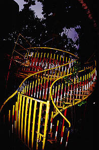  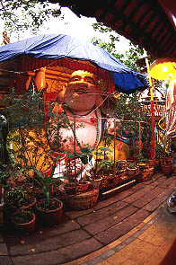
わあぉ！こんなお方が！
さらに奥には楽しそうなところもあるがここはグッと堪えて寺を後にした。
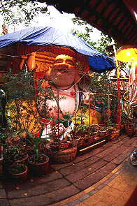
わあぉ！こんなお方が！
さらに奥には楽しそうなところもあるがここはグッと堪えて寺を後にした。
・・・数日後・・・
再び大覚寺にチャレンジである。
先日とは違い時刻は昼近く、実に良い天気、今度は逆に暑すぎる・・・
まずは入口にある鉄塔に行き、階段を登ってみる。
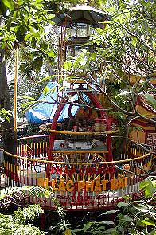
鉄塔の中央には鐘が吊るされている。その意味では鐘楼と言う事もできるが、決して鐘楼と呼びたくない位ファンキーな物件であるのも事実。
周りには木が密集しているのでツリーハウス気分なのは良いのだが蚊が多いぞ。
で、塔の奥のブルーシートの中に先般のお方が。
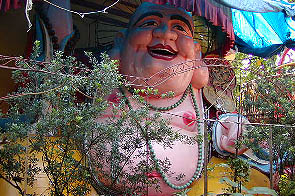 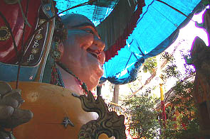
弥勒大仏である。コジマ電気並みの屈託のない笑顔。
えらく狭い場所にあるのに遠慮なしの大きさ。4〜5メートル位はあるのだろう。
しかも狭い敷地に遠慮なしのアンコ型体型、しかもビビチクでかいぞ。
仏具屋や屋台などで売られている安い彌勒像をそのまま巨大化させたようなおもちゃっぽさが素晴らしい。
叩いたらペコペコと音がしたのでFRP製でしょう。
 耳の穴がちゃあんと開いてます。実は頭の上に穴が開いていて巨大な貯金箱だったりして。金貯まりそー。
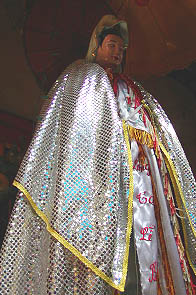
で、大仏の状面にはスパンコールのマントが眩しい素敵なお方。観音像なのか、それとも道教系の聖母なのかは不明。
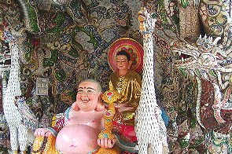 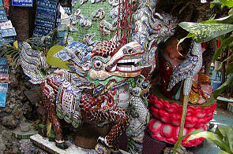
さらに奥に進むとタイルモザイクの雨嵐。うっとりするような力作が揃っている。
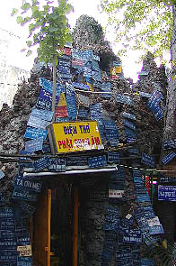
その横には火山岩を積んだ人工洞窟があり中には観音像がまつられていたが、特筆すべきはその外側である。
ナンバープレートのような板が無数に打ち付けられている。
一体何なんだろう？
「無病息災」とか「商売繁盛」とか書かれているんだろうか、それとも何かの奉納者の名前なのだろうか。
居酒屋で壁中に名刺や定期券が張ってあるところがあるが、そんな雰囲気だ。いや、もっとヘビーな・・・
ちなみにこの山は階段があって富士塚のように登る事が出来るが私が行ったときは入口の扉が閉まっていました。
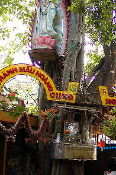 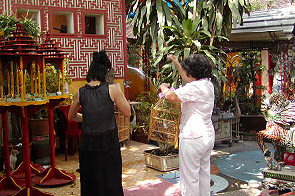
さらに先には幹に直接観音像（勿論電飾完備）を括りつけた大胆な木や鳥放しコーナーなどがある。
ちなみに入口からここまで移動距離は30メートル程である。恐ろしい密度でしょ。
もう一度入口の方へ戻ってから本堂を参拝する。
本堂にも電飾ブッダや渋い石庭などがあったのだが外のファンキーさに比べたら大人しいもんなので割愛します。
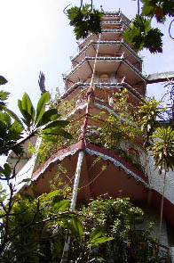
で、鉄塔の向いには十重の塔がある。
下の方は建物にくっついているので下だけ見ると偉く派手な非常階段みたいだが見上げるとちゃあんと塔になってます。
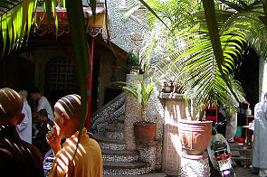
塔の入口。
昼時なので信者の皆さんが昼食をとっている。
その間を縫って登ってみる。
皆さん変な日本人がカメラ片手に塔に登りはじめたので興味津々。
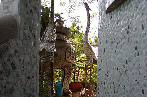 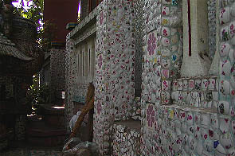
塔は壁面が全て陶器のモザイクで出来ており、さながらモザイク城の様相を呈している。
所々にモザイクの巨大香炉などが置いてある。窓から中を見ると仏像がまつってあったり家具が置いてあったりして、純粋なパゴダというよりは住居とパゴダが混在しているような不思議な建物だった。
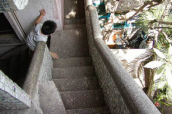
階段の取り付き方も複雑で一般のパゴダのような連続性がない。各階で様子が全然違う。
恐らく建物に無理矢理塔をくっつけたのではなかろうか。
それで行き当たりばったりの設計になってしまったのではないだろうか。
だからこそ迷路のようで面白いのだが。
食事をしていた信者の皆さんもあっちだこっちだと下から指示を送ってくれる万全のサポート体制。
しかし途中で階段は終わってしまい半分くらいしか登れなかった。
しかし、私は登山家ではないのでこの面白い立体迷宮を堪能出来ただけで満足であった。
上から見下ろしてその境内のあまりの狭さと濃密さに改めて驚いた。濃いぜ。
耳の穴がちゃあんと開いてます。実は頭の上に穴が開いていて巨大な貯金箱だったりして。金貯まりそー。
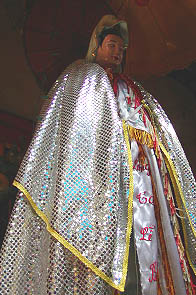
で、大仏の状面にはスパンコールのマントが眩しい素敵なお方。観音像なのか、それとも道教系の聖母なのかは不明。
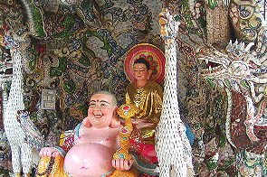 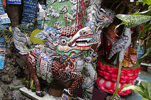
さらに奥に進むとタイルモザイクの雨嵐。うっとりするような力作が揃っている。
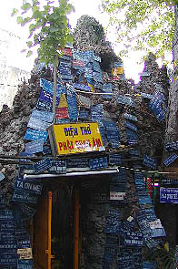
その横には火山岩を積んだ人工洞窟があり中には観音像がまつられていたが、特筆すべきはその外側である。
ナンバープレートのような板が無数に打ち付けられている。
一体何なんだろう？
「無病息災」とか「商売繁盛」とか書かれているんだろうか、それとも何かの奉納者の名前なのだろうか。
居酒屋で壁中に名刺や定期券が張ってあるところがあるが、そんな雰囲気だ。いや、もっとヘビーな・・・
ちなみにこの山は階段があって富士塚のように登る事が出来るが私が行ったときは入口の扉が閉まっていました。
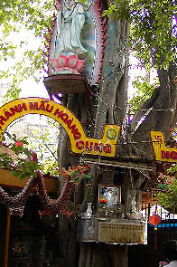 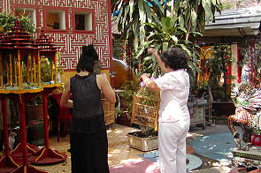
さらに先には幹に直接観音像（勿論電飾完備）を括りつけた大胆な木や鳥放しコーナーなどがある。
ちなみに入口からここまで移動距離は30メートル程である。恐ろしい密度でしょ。
もう一度入口の方へ戻ってから本堂を参拝する。
本堂にも電飾ブッダや渋い石庭などがあったのだが外のファンキーさに比べたら大人しいもんなので割愛します。
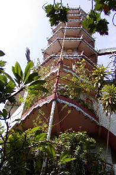
で、鉄塔の向いには十重の塔がある。
下の方は建物にくっついているので下だけ見ると偉く派手な非常階段みたいだが見上げるとちゃあんと塔になってます。
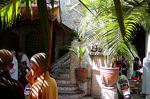
塔の入口。
昼時なので信者の皆さんが昼食をとっている。
その間を縫って登ってみる。
皆さん変な日本人がカメラ片手に塔に登りはじめたので興味津々。
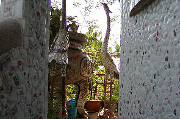 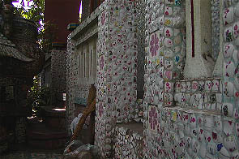
塔は壁面が全て陶器のモザイクで出来ており、さながらモザイク城の様相を呈している。
所々にモザイクの巨大香炉などが置いてある。窓から中を見ると仏像がまつってあったり家具が置いてあったりして、純粋なパゴダというよりは住居とパゴダが混在しているような不思議な建物だった。
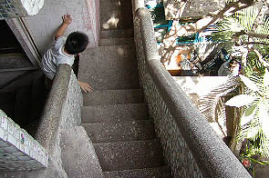
階段の取り付き方も複雑で一般のパゴダのような連続性がない。各階で様子が全然違う。
恐らく建物に無理矢理塔をくっつけたのではなかろうか。
それで行き当たりばったりの設計になってしまったのではないだろうか。
だからこそ迷路のようで面白いのだが。
食事をしていた信者の皆さんもあっちだこっちだと下から指示を送ってくれる万全のサポート体制。
しかし途中で階段は終わってしまい半分くらいしか登れなかった。
しかし、私は登山家ではないのでこの面白い立体迷宮を堪能出来ただけで満足であった。
上から見下ろしてその境内のあまりの狭さと濃密さに改めて驚いた。濃いぜ。
次へいきましょう
越南珍寺劇場
珍寺大道場 HOME